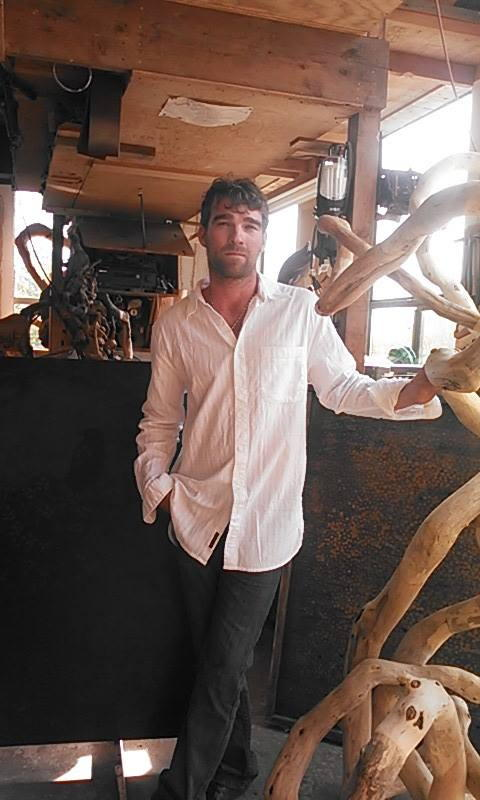

1982
On the Washington coast there’s a place where nature’s leftovers get a second chance at stardom.
The place is Knock on Wood, and Jeffro Uitto is the artist making the magic happen.
Since high school Jeffro has been creating with wood, his favorite medium. This stuff isn’t from a lumber mill either. Each piece is found and rescued from the shores of Tokeland, the banks of Smith Creek, or the valleys between the Willapa Hills. In due time the varied sticks, slabs, and roots are cured and then found a fitting home.
As a finished project comes together you can finally see what Jeffro’s had in his mind all along. A gnarly rocking chair, elegant bedframe, or even a burl-topped bar ready for drinks.
Every project that rolls out of the shop enjoys the same careful construction whether it’s a rose bud made from cedar shavings or a commissioned sculpture. Not everything is built right in the shop though. Clients have brought Jeffro on site to build one-off creations in places like Alaska and Hawaii.
Wherever he might be, Tokeland, WA is where Jeffro’s heart is. While enjoying the sound of the waves, Jeff will be working away at his next creation.
Jeffro’s shop is located near the historic Tokeland Hotel, a stone’s throw from Willapa Bay. Follow the trail of sawdust and you’ll find Jeffro carving and sawing his way towards another finished piece.
Visitors are surprised to see that many of Jeffro’s tools are hand made by the artist himself. After you get to know him this isn’t surpising at all. Jeffro has a creative fire that burns hot and it keeps him going full speed when he’s working (and playing).